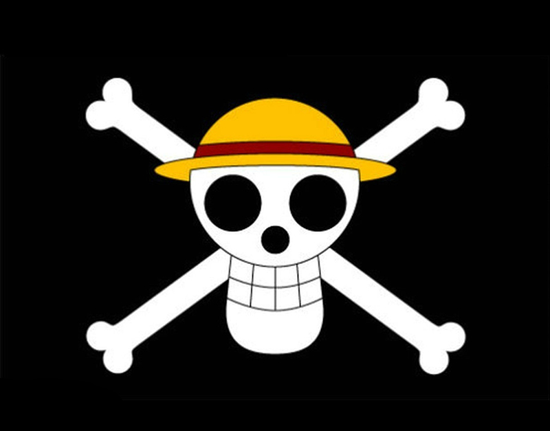

|
草帽海贼团
草帽海贼团中主人公蒙奇·D·路飞所集结的海贼团，旗帜图案是戴着草帽的骷髅。从东海进入伟大航路，经过“司法之岛事件”后，名扬天下。至香波地诸岛，全员被熊弹飞分散到世界各地 。经由“冥王”雷利的指点，给船员们两年期间各自修炼。之后全员重新聚集于香波地诸岛，进入“新世界”。
截止德雷斯罗萨篇后全部成员共九人。分别为船长路飞、剑士索隆、航海士娜美、狙击手乌索普、厨师山治、船医乔巴、考古学家罗宾、船工弗兰奇和音乐家布鲁克。
旗下还有7队团体组成的“草帽大船团”，分别为俊美海贼团、巴托俱乐部、八宝水军、XXX健身房格斗联合、咚塔塔族咚塔兵团、巨兵海贼团以及约塔玛利亚大船团。
|

旗帜 |